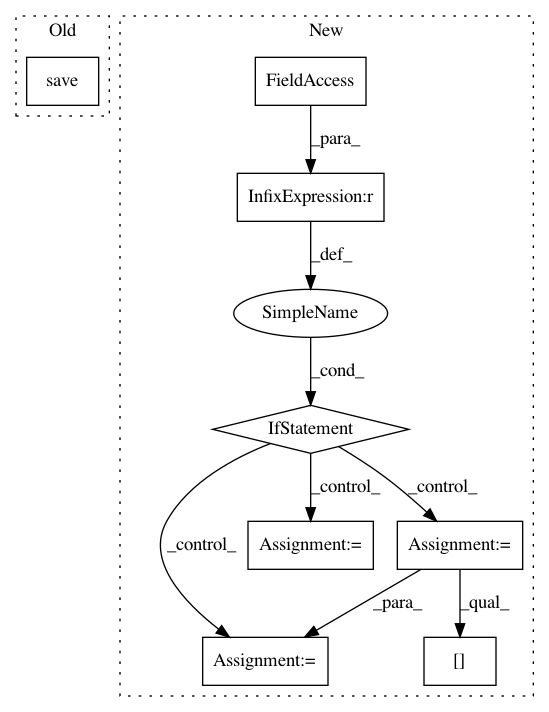

b85a210e72d4333b71c72f33b905de0ad0070c17,scripts/train.py,,,#,10
Before Change
model.fit(X,Y, nb_epoch=10, validation_split=0.2)
model.save("test_model")
After Change
// Get args.
args = docopt(__doc__)
if __name__ == "__main__":
print(args)
sessions = args["--sessions"].split(",")
epochs = int(args["--epochs"])
//Train on session pictures
sh = dk.sessions.SessionHandler(sessions_path="~/donkey_data/sessions/")
s = sh.load(sessions[0])
X, Y = s.load_dataset()
//Train on simulated pictures
//X, Y = dk.datasets.moving_square(n_frames=2000, return_x=True, return_y=False)
//print("Downloading file, this could take some time.")
//url = "https://s3.amazonaws.com/donkey_resources/port.pkl"
//X, Y = dk.datasets.load_url(url)
print("Loading Model.")
//m = dk.models.cnn3_full1_relu()
m = keras.models.load_model("/home/wroscoe/donkey_data/models/best-diff_lines2.hdf5")
filepath="best-"+sessions[0]+".hdf5"
checkpoint = ModelCheckpoint(filepath, monitor="val_loss", verbose=1,
save_best_only=True, mode="min")
callbacks_list = [checkpoint]
hist = m.fit(X, Y, batch_size=64, nb_epoch=epochs,
validation_split=.2, callbacks=callbacks_list)
In pattern: SUPERPATTERN
Frequency: 3
Non-data size: 8
Instances
Project Name: autorope/donkeycar
Commit Name: b85a210e72d4333b71c72f33b905de0ad0070c17
Time: 2017-02-18
Author: wroscoe@gmail.com
File Name: scripts/train.py
Class Name:
Method Name:
Project Name: allenai/allennlp
Commit Name: ab4aeb28f1b81747c985a188b6c4c569c02aaa75
Time: 2018-02-02
Author: matt-peters@users.noreply.github.com
File Name: allennlp/training/trainer.py
Class Name: Trainer
Method Name: _save_checkpoint
Project Name: HyperGAN/HyperGAN
Commit Name: bd090db61ce516a22c8c433bec29a9be7c1c62a2
Time: 2017-06-28
Author: mikkel@255bits.com
File Name: examples/alignment.py
Class Name:
Method Name: